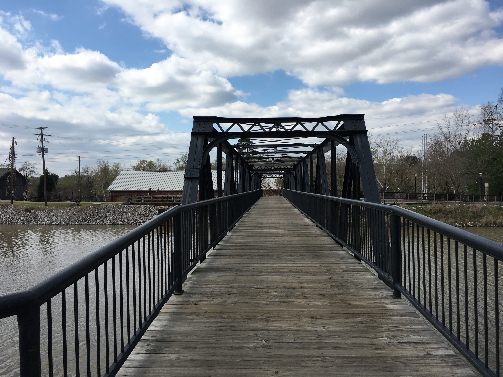
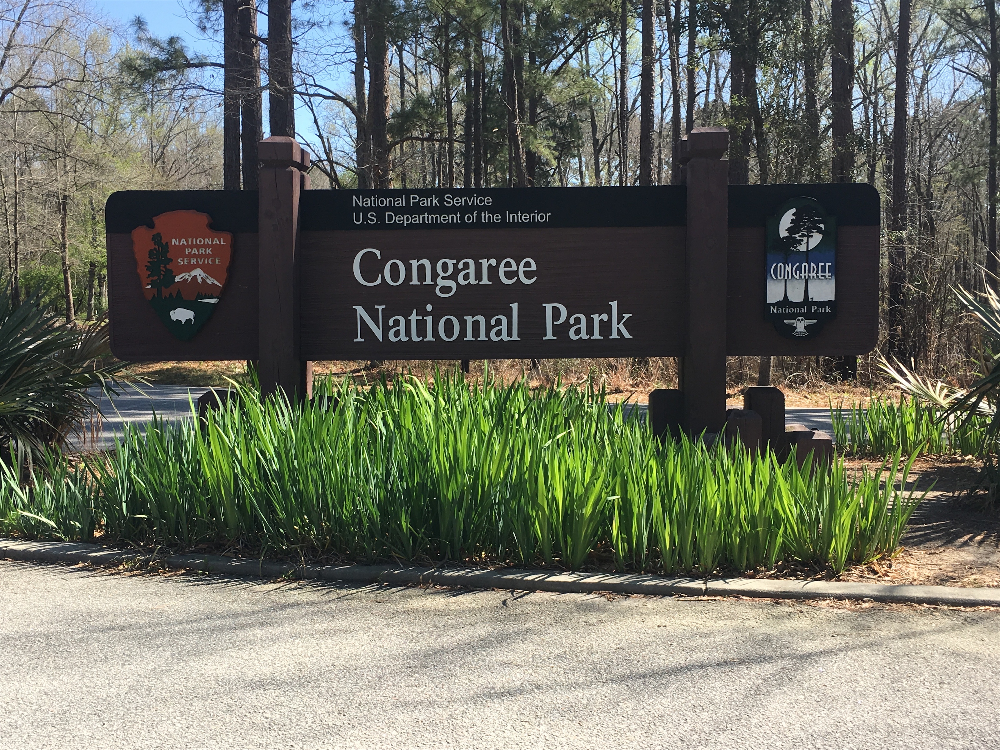
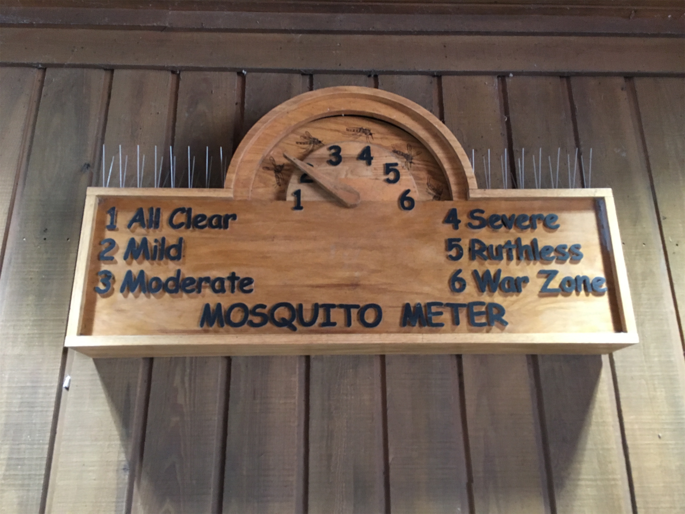
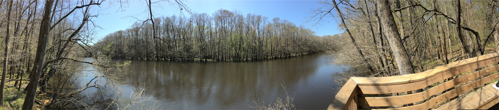

Thursday, Mar 22, 2018, 12:05 PM EDT
Congaree National Park, Hopkins, SC, United States
54°F Sunny
54°F Sunny
![]()
After a nice lunch at Motor Supply Co Bistro in Columbia, SC (a 3 hr drive south from Asheville), and a visit to the South Carolina State Museum and their riverfront park, we stayed overnight in Lexington, just west of Columbia. It was sunny and 32 when we awoke, so we waited until checkout time to make the 1/2 hr drive south to the park, where it had warmed up to 50. This park is often referred to as a swamp, but it is technically a floodplain since the water does move. It is the largest remaining old-growth bottomland hardwood forest in North America, and it became a National Park fairly recently, in 2003. It has many record-sized trees too, although Hurricane Hugo took its toll in 1989.
The key feature is a 2.4 mile boardwalk that took us through constantly changing scenery, and we had it almost all to ourselves. The pictures show Baldcypress trees, with their flared trunks and surrounding Cypress Knees (the little cone heads) whose function is still not understood. Then, we would come across Dwarf Palmettos, grassland areas, swamps, and Weston Lake, an oxbow left from the constantly-changing Congaree River course. The Loblolly Pines are 130 ft high. Alas, we missed the four kinds of poisonous snakes.
The water level was about average today, but in the winter it sometimes overflows over the boardwalk, and in the summer it is dry, except for an occasional flood from a downpour. We are glad we missed the hot, humid, and buggy season.
On the way back, we took the eastern route up to Charlotte, and then west on I-40, stopping in Hickory, population 40,000, a furniture town and home to Apple’s datacenter for Siri, where we had a nice dinner in a renovated old brick hosiery factory.





